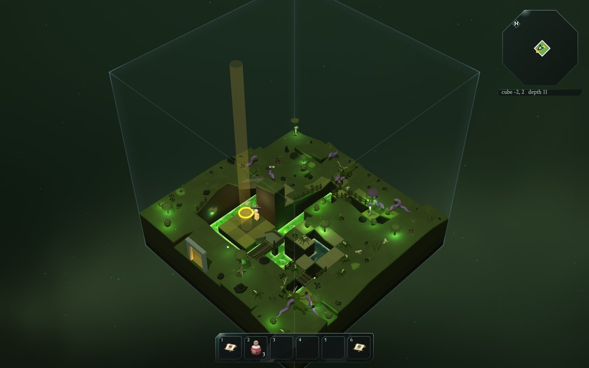

Painting with triangles
Malen mit Dreiecken
Everything you see in the game, the hills, the hero, the swords, the spiders, is made of tiny flat triangles.
Alles, was du im Spiel siehst, die Hügel, der Held, die Schwerter, die Spinnen, besteht aus winzigen flachen Dreiecken.
Why triangles? Three points always lie flat, so a triangle is the simplest shape a computer can fill in. Glue enough of them together and you can make anything.
Warum Dreiecke? Drei Punkte liegen immer flach, darum ist ein Dreieck die einfachste Form, die ein Computer ausfüllen kann. Klebt man genug davon zusammen, kann man alles bauen.
The graphics card in your computer is a machine made just for painting triangles, millions of them every second.
Die Grafikkarte in deinem Computer ist eine Maschine nur zum Dreiecke-Malen, Millionen pro Sekunde.
Switch on "show triangles" and switch off "paint": that's what the computer really sees.
Schalte "Dreiecke zeigen" an und "malen" aus: So sieht es der Computer wirklich.
From 3D to your flat screen
Von 3D auf deinen flachen Bildschirm
Every corner of every triangle has three numbers: x, y and z. Your screen is flat: it only has x and y. The camera turns one into the other:
Jede Ecke jedes Dreiecks hat drei Zahlen: x, y und z. Dein Bildschirm ist flach: Er hat nur x und y. Die Kamera verwandelt das eine ins andere:
- Turn and tilt the world, so it is seen from the camera's point of view.
- Die Welt drehen und kippen, damit man sie aus Sicht der Kamera sieht.
- Divide by the distance: things far away get smaller. That's called perspective.
- Durch die Entfernung teilen: Ferne Dinge werden kleiner. Das heißt Perspektive.
- Fill in the triangle's pixels, and colour them.
- Die Pixel des Dreiecks ausfüllen und färben.
A helper library called three.js does the hard math and talks to the graphics card. The game tells it what to draw.
Eine Hilfsbibliothek namens three.js macht die schwere Mathe und redet mit der Grafikkarte. Das Spiel sagt ihr, was gemalt werden soll.
The Glass Bird's camera
Die Kamera im Glasvogel
- looks down at 44°, from far away
- schaut mit 44° von weit weg nach unten
- has a narrow lens (28°), so the cube looks almost like a little model on a table, a diorama
- hat ein schmales Objektiv (28°), darum sieht der Würfel fast aus wie ein kleines Modell auf dem Tisch, ein Diorama
- is just far enough away that the whole cube fits on the screen
- ist genau so weit weg, dass der ganze Würfel auf den Bildschirm passt
- turns in 90° steps with Q and E, and zooms in 5 steps with K and L (zoomed in, it follows the hero)
- dreht sich in 90°-Schritten mit Q und E und zoomt in 5 Stufen mit K und L (reingezoomt folgt sie dem Helden)
- gets a tiny shove on every hit, and springs back
- bekommt bei jedem Treffer einen winzigen Schubs und federt zurück
- tap Tab and it flies down behind your hero with a wide lens (60°), the close view, handy in tunnels and caves; there the mouse looks around, like in other third-person games (Esc gives the mouse back)
- tippst du Tab, fliegt sie hinter deinen Helden, mit weitem Objektiv (60°), die Nahansicht, praktisch in Tunneln und Höhlen; dort schaust du dich mit der Maus um, wie in anderen Third-Person-Spielen (Esc gibt die Maus wieder frei)
src/game/camera.js
src/game/camera.js
Try it: from your click back into the world
Probier es: von deinem Klick zurück in die Welt
The camera turns the 3D world into a flat picture. But when you click on the floor to walk there, the game has to go the other way: which spot in the world is under the mouse?
Die Kamera macht aus der 3D-Welt ein flaches Bild. Aber wenn du auf den Boden klickst, um dorthin zu laufen, muss das Spiel den umgekehrten Weg gehen: Welcher Ort in der Welt ist unter der Maus?
- Shoot a line, a ray, from the camera through the point on the screen where the mouse is.
- Schieß eine Linie, einen Strahl, von der Kamera durch den Punkt auf dem Bildschirm, wo die Maus ist.
- Walk along the ray in tiny steps (0.04 cells each).
- Lauf in winzigen Schritten den Strahl entlang (je 0,04 Zellen).
- At every step, ask the world: is this inside the ground? The first step that is: that's the spot.
- Frag bei jedem Schritt die Welt: Ist das im Boden drin? Der erste Schritt, bei dem es so ist: Das ist der Ort.
Then the hero finds a path there. Make the steps big in the demo, and see what goes wrong with the thin bridge.
Dann sucht der Held einen Weg dorthin. Mach die Schritte in der Demo groß und schau, was mit der dünnen Brücke schiefgeht.
The same walk along a line also finds what's between you and the camera (the cutaway) and whether a monster can see you.
Dasselbe Ablaufen einer Linie findet auch, was zwischen dir und der Kamera ist (der Ausschnitt), und ob ein Monster dich sehen kann.
The real code: the floor under the mouse
Der echte Code: der Boden unter der Maus
cast()makes the ray:ois where it starts (the camera),dwhich way it goes.cast()macht den Strahl:oist, wo er anfängt (die Kamera),d, in welche Richtung er geht.d.y > -1e-3: a ray that doesn't go down never hits a floor. Give up at once.d.y > -1e-3: Ein Strahl, der nicht nach unten geht, trifft nie einen Boden. Sofort aufgeben.- The first
tskips the empty sky above the highest floor of the cube. - Das erste
tüberspringt den leeren Himmel über dem höchsten Boden des Würfels. - The loop: the point at distance
tiso + d × t. Thent += 0.04, a little further. - Die Schleife: Der Punkt in der Entfernung
tisto + d × t. Dannt += 0.04, ein Stück weiter. continueskips to the next step: outside the cube, or a floor the cutaway hides near you (you can't click on what you can't see).continuespringt zum nächsten Schritt: außerhalb des Würfels, oder ein Boden, den der Ausschnitt in deiner Nähe versteckt (worauf du nichts siehst, kannst du nicht klicken).- Outside the cube,
besideAtstill looks: behind an open wall lies a cube you have been in, and you can walk right over into it. The first ground found there is kept inbeyond, and is the answer if the ray hits nothing in the cube itself. - Außerhalb des Würfels schaut
besideAttrotzdem nach: Hinter einer offenen Wand liegt ein Würfel, in dem du schon warst, und du kannst einfach hinüberlaufen. Der erste Boden, der dort gefunden wird, kommt inbeyondund ist die Antwort, wenn der Strahl im Würfel selbst nichts trifft.
Light and shadow
Licht und Schatten
How bright is a triangle? It depends on how much it faces the light. A slope that faces the sun is bright, one that turns away is darker. Try moving the sun in the triangle demo.
Wie hell ist ein Dreieck? Das hängt davon ab, wie sehr es zum Licht zeigt. Ein Hang zur Sonne ist hell, einer, der sich wegdreht, ist dunkler. Beweg in der Dreiecks-Demo mal die Sonne.
The game uses three kinds of light:
Das Spiel benutzt drei Arten von Licht:
- The sun: light from one direction, the same everywhere. It also casts shadows.
- Die Sonne: Licht aus einer Richtung, überall gleich. Sie wirft auch Schatten.
- Sky light: a soft light, a bit bluer from above and browner from below, so nothing is ever pitch black.
- Himmelslicht: ein weiches Licht, von oben etwas bläulicher und von unten bräunlicher, damit nichts ganz schwarz ist.
- Point lights: glowing things like lava, portals, crystals and fire monsters, shining in all directions around them.
- Punktlichter: leuchtende Dinge wie Lava, Portale, Kristalle und Feuermonster, die in alle Richtungen um sich herum scheinen.
How shadows work
Wie Schatten funktionieren
Before drawing the picture, the game first draws the world from the sun's point of view, but only remembers how far away everything is. That's the shadow map, 2048 by 2048 pixels.
Bevor das Bild gemalt wird, malt das Spiel die Welt erst aus Sicht der Sonne, merkt sich aber nur, wie weit alles weg ist. Das ist die Schattenkarte (shadow map), 2048 mal 2048 Pixel.
Then, for each pixel of the real picture, it asks: "can the sun see this spot, or is something closer to the sun in the way?" If something is in the way: shadow!
Dann fragt es für jeden Pixel des echten Bildes: "Kann die Sonne diese Stelle sehen, oder ist etwas näher an der Sonne im Weg?" Wenn etwas im Weg ist: Schatten!
Lamps, fires and lava cast shadows too, dozens of them in a cube. That's too much work for every frame, so what never moves is worked out once, when you come into a cube, and kept in a picture glued onto the ground. Under an open sky the sun goes round as the day goes by, so its picture is painted again, a little every frame, as it moves.
Auch Lampen, Feuer und Lava werfen Schatten, Dutzende davon in einem Würfel. Das ist zu viel Arbeit für jedes Bild, darum wird, was sich nie bewegt, einmal ausgerechnet, wenn du in einen Würfel kommst, und in einem Bild aufgehoben, das auf den Boden geklebt ist. Unter offenem Himmel wandert die Sonne im Lauf des Tages, darum wird ihr Bild immer wieder neu gemalt, ein bisschen in jedem Bild, während sie weiterzieht.
The whole story: Light and Shadow Die ganze Geschichte: Licht und SchattenTry it: cutting holes in the roof
Probier es: Löcher ins Dach schneiden
When you walk under a bridge or into a cave, the walls and floors above you would hide you. So the game cuts them away, only around you, only in front of you. Drag the hero under the floor and onto the hill.
Wenn du unter eine Brücke oder in eine Höhle gehst, würden die Wände und Böden über dir dich verdecken. Darum schneidet das Spiel sie weg, nur um dich herum und nur vor dir. Zieh den Helden unter den Boden und auf den Hügel.
The white dots are the probe: the game checks the way from your chest to the camera every 0.12 units. The red circle is the first thing in the way.
Die weißen Punkte sind die Sonde: Das Spiel prüft den Weg von deiner Brust zur Kamera alle 0,12 Einheiten. Der rote Kreis ist das Erste, was im Weg ist.
How the cutaway works
Wie der Ausschnitt funktioniert
- Look: send probes from the hero's chest and head towards the camera, and from points around the hero. If the hero is hidden, one more from the feet, so the legs show too. Find the lowest solid thing in the way.
- Schauen: Sonden von Brust und Kopf des Helden zur Kamera schicken, und von Punkten rund um den Helden. Ist der Held verdeckt, noch eine von den Füßen, damit auch die Beine zu sehen sind. Das niedrigste feste Ding im Weg finden.
- Pick a height: just under the floor above you if there is one, otherwise snapped to the terrain levels. Never below your feet, and never below the water you wade in: cut lower, the water round your legs would be gone.
- Eine Höhe wählen: direkt unter dem Boden über dir, wenn es einen gibt, sonst auf die Geländestufen eingerastet. Nie unter deinen Füßen, und nie unter dem Wasser, durch das du watest: Tiefer geschnitten, wäre das Wasser um deine Beine weg.
- Cut: while drawing, every pixel that is above that height, between the hero and the camera (never behind the hero), and inside a shape around the hero is simply not drawn.
- Schneiden: Beim Malen wird jeder Pixel, der über dieser Höhe liegt, zwischen dem Helden und der Kamera ist (nie hinter dem Helden) und in einer Form um den Helden liegt, einfach nicht gemalt.
- Fill in: the cut edges are painted as a flat lid (like a cake cut open), and the removed parts as very faint glass, so you still see their shape.
- Auffüllen: Die Schnittkanten werden als flacher Deckel gemalt (wie ein aufgeschnittener Kuchen), und die weggeschnittenen Teile als ganz blasses Glas, damit du ihre Form noch siehst.
Little touches
Kleine Details
- The shape is not a circle, but a nine-cornered polygon that slowly turns. It looks more hand-made.
- Die Form ist kein Kreis, sondern ein Neuneck, das sich langsam dreht. Das sieht handgemachter aus.
- The cut opens fast (you should never be hidden), but closes slowly, and only after you were visible for a second. Otherwise it would flicker all the time.
- Der Schnitt öffnet sich schnell (du sollst nie versteckt sein), schließt sich aber langsam, und erst nachdem du eine Sekunde sichtbar warst. Sonst würde er dauernd flackern.
- In caves and canyons, the walls on the camera's side are cut down too, to just above the hero, but never below the ground (or stair) right behind them: lower, they would hide nothing more. Not in the far corners either, where they hide next to nothing. Inside a house they come down all the way to the floor, so you look into the room like into a doll's house.
- In Höhlen und Schluchten werden die Wände auf der Kameraseite auch heruntergeschnitten, bis knapp über den Helden, aber nie tiefer als der Boden (oder die Treppe) direkt dahinter: Tiefer würden sie nichts mehr verdecken. Auch nicht in den hinteren Ecken, wo sie fast nichts verdecken. In einem Haus geht es ganz bis zum Boden hinunter, und du schaust in das Zimmer hinein wie in ein Puppenhaus.

Every depth has its own look
Jede Tiefe hat ihr eigenes Aussehen
The colours are not painted by hand on every cube. Each theme has a small table of colours by height: low ground, high ground, cliff stripes, the sky. The game mixes between them. Going deeper, the light even fades slowly from one theme to the next. The first column says on which depths a theme may show up: the depths are in three parts, the sky, the sunlit hollows and the deep, and each theme belongs to one part. Every world picks half of the themes of each part, at random, and puts them one after the other in the same order as in the table, so a theme lasts one to three depths, and every theme turns up just as often as every other. This table is read live from the game's code:
Die Farben werden nicht auf jeden Würfel von Hand gemalt. Jedes Thema hat eine kleine Farbtabelle nach Höhe: niedriger Boden, hoher Boden, Klippenstreifen, der Himmel. Das Spiel mischt dazwischen. Beim Hinabsteigen geht das Licht sogar langsam von einem Thema ins nächste über. Die erste Spalte sagt, in welchen Tiefen ein Thema vorkommen kann: Die Tiefen sind in drei Teile geteilt, den Himmel, die sonnigen Senken und die Tiefe, und jedes Thema gehört zu einem Teil. Jede Welt sucht sich zufällig die Hälfte der Themen jedes Teils aus und legt sie in derselben Reihenfolge wie in der Tabelle hintereinander, darum hält ein Thema eine bis drei Tiefen lang, und jedes Thema kommt genau so oft vor wie jedes andere. Diese Tabelle wird live aus dem Code des Spiels gelesen:
Keeping it fast
Schnell bleiben
The game wants a new picture every 16 milliseconds. Everything that takes longer has to be done cleverly:
Das Spiel will alle 16 Millisekunden ein neues Bild. Alles, was länger dauert, muss schlau gemacht werden:
- A helper in the background. A web worker invents the cubes and builds their triangles, then hands them over in one go. The game keeps running smoothly meanwhile.
- Ein Helfer im Hintergrund. Ein Web Worker erfindet die Würfel und baut ihre Dreiecke und gibt sie dann auf einen Schlag ab. Das Spiel läuft währenddessen flüssig weiter.
- Cubes behind portals are prepared early, so travelling usually starts at once.
- Würfel hinter Portalen werden früh vorbereitet, damit die Reise meistens sofort losgeht.
- Cubes you're not in are drawn as simple copies: no plants, no monsters, no lights, no shadows.
- Würfel, in denen du nicht bist, werden als einfache Kopien gemalt: keine Pflanzen, keine Monster, keine Lichter, keine Schatten.
- One draw for many props. A hundred identical rocks are sent to the graphics card in one go, each with its own position (called instancing).
- Einmal malen für viele Dinge. Hundert gleiche Steine werden in einem Rutsch an die Grafikkarte geschickt, jeder mit seiner eigenen Position (das heißt Instancing).
- Out of sight, out of mind. Cubes behind the camera, or hidden in the fog, are skipped.
- Aus den Augen, aus dem Sinn. Würfel hinter der Kamera oder im Nebel werden übersprungen.
- Grass that sways in the wind is moved by the graphics card itself, not by the game.
- Gras, das im Wind wiegt, wird von der Grafikkarte selbst bewegt, nicht vom Spiel.
- The stars twinkle on the graphics card too, one star at a time, not pixel by pixel.
- Die Sterne funkeln auch auf der Grafikkarte, einer nach dem anderen, nicht Pixel für Pixel.
The real code: a tiny shader
Der echte Code: ein winziger Shader
This is GLSL, the language of shaders. This little program runs on the graphics card for every single pixel of a fading cube.
Das ist GLSL, die Sprache der Shader. Dieses kleine Programm läuft auf der Grafikkarte für jeden einzelnen Pixel eines Würfels, der überblendet.
gl_FragCoord.xyis the pixel's position on screen.mod(..., 4.0)picks its spot in the 4×4 table.gl_FragCoord.xyist die Position des Pixels auf dem Bildschirm.mod(..., 4.0)sucht seinen Platz in der 4×4-Tabelle.uFadeis how far the fade is (0 to 1), set by the game every frame.uFadeist, wie weit die Überblendung ist (0 bis 1), vom Spiel in jedem Bild gesetzt.discardmeans: don't draw this pixel at all.discardheißt: Mal diesen Pixel gar nicht.uFadeInvflips the test, for the cube you're leaving. That's why the two never overlap.uFadeInvdreht den Test um, für den Würfel, den du verlässt. Darum überlappen sich die beiden nie.
The game slips this code into three.js's own materials just before they are built (onBeforeCompile).
Das Spiel schmuggelt diesen Code in die eigenen Materialien von three.js, kurz bevor sie gebaut werden (onBeforeCompile).